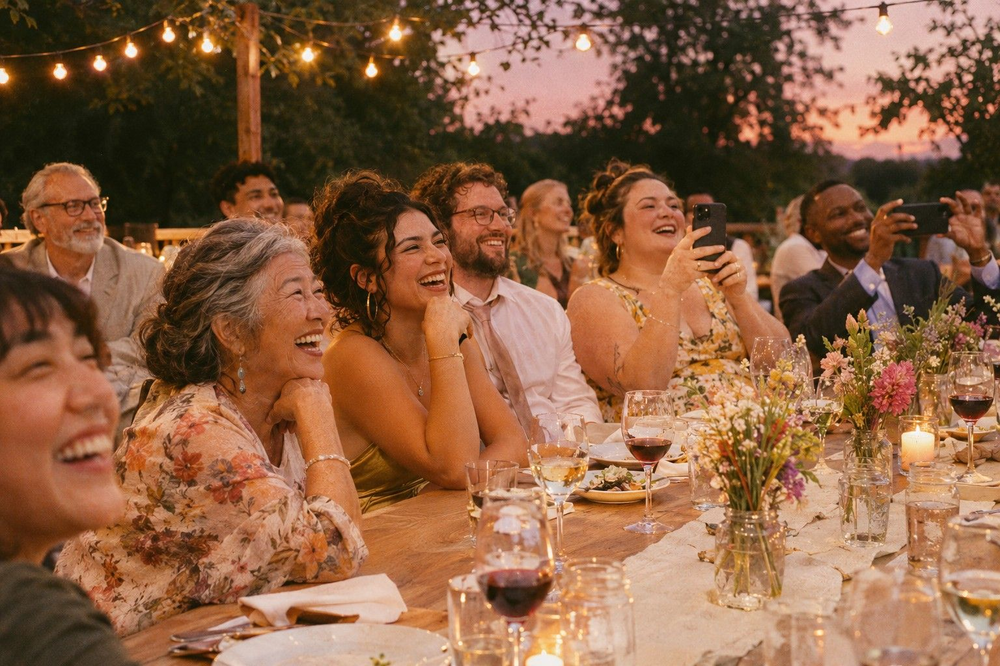
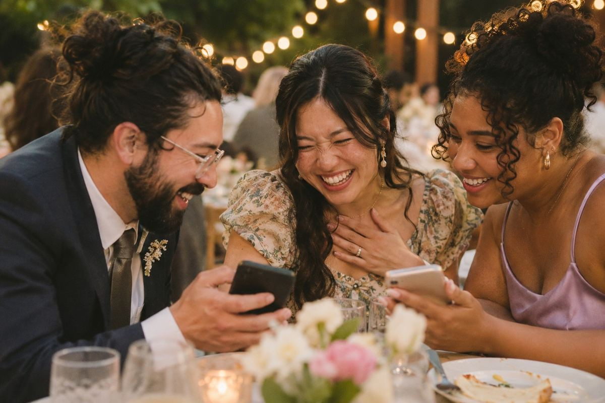
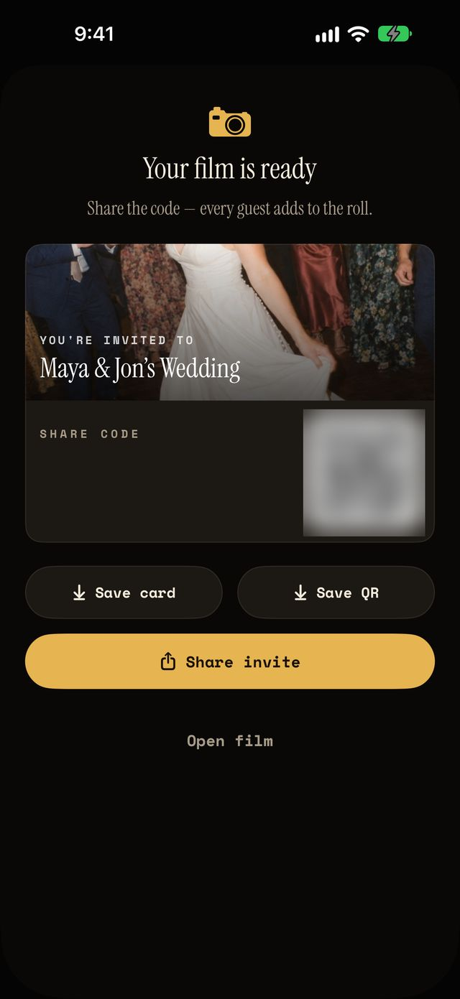

How to Collect Photos From Wedding Guests: 9 Ways Compared
Nine methods side by side, the right pick for your guest list, and when to ask.

Short answer: The most reliable way to collect photos from wedding guests is one QR code that opens a single shared place to shoot or upload during the wedding, ideally one that works in any phone’s browser without an account. Put it on every table, announce it once, and send one follow-up text within 48 hours. Asking afterward, on its own, usually collects the least.
Your photographer covers the vows, the portraits and the first dance. Everything else, from the back tables to the dance floor after the pro packs up, ends up on your guests’ phones. This guide compares nine methods side by side, recommends one by wedding size and guest mix, and gives you a before, day-of and after timeline with wording you can copy.
How to collect photos from wedding guests: 9 ways compared
“Guest effort” is what a guest does in the moment. “Where photos end up” is where you’ll go to download them later, which matters more than it sounds.
| Method | Guest effort | Cost | Photo quality | Android guests | Who sees the photos | Where photos end up |
|---|---|---|---|---|---|---|
| Shared camera app with a QR code | Low: scan, type a name, shoot | Free for small events, paid for big ones | Varies by app | Yes, if it has browser join | Event members (check each app) | The app’s event album |
| Google Photos shared album | Medium: sign in to Google, then upload | Free (uses Google storage) | Full size or compressed, per each guest’s settings | Yes | Anyone with the link | Google Photos |
| iCloud Shared Album | Low on iPhone, a browser for everyone else | Free (uses your iCloud storage) | Full resolution in new albums | Yes, in a browser (new albums) | Participants; you choose whether to approve them | Your iCloud |
| Google Drive folder or Dropbox file request | Medium: upload from the camera roll later | Free tier with small storage caps | Original files | Yes | You, plus anyone you share the folder with | Your Drive or Dropbox |
| WhatsApp group or group text | Low, but photos get buried | Free | Usually compressed | Yes | Everyone in the chat | Scattered across chat histories |
| Wedding hashtag | Low, for the few who post | Free | Social media copies | Yes | The public | Other people’s feeds |
| Disposable cameras on the tables | Low | Per camera, plus developing per roll | Film scans; dim rooms are hit and miss | Not needed | You, once developed | A photo lab, days to weeks later |
| Photo booth | Low | $425–$1,000 for most couples | Good, but booth shots only | Not needed | Depends on the vendor’s gallery | Prints plus the vendor’s gallery |
| Asking after the wedding | High: guests have to remember | Free | Whatever they send | Yes | You | Your texts and inbox |
The pattern is plain: methods that work during the wedding beat methods that depend on guests remembering later, and anything that needs a particular account, app or phone loses part of the room.
Which method fits your wedding?
Two things decide it: how many guests you have and what phones they carry. The average US wedding in 2025 had 117 guests, according to The Knot’s 2026 Real Weddings Study. At that size, plan for a mix of iPhones, Android phones and at least one relative who has never scanned a QR code.
| Your wedding | Best main method | Good backstop |
|---|---|---|
| Under 30 guests, nearly all on iPhone | An iCloud Shared Album or a shared camera app | One follow-up text with the album link |
| 30 to 150 guests, mixed phones | A shared camera app that guests can join in a browser | A Dropbox file request for anyone who shot on a real camera |
| 150+ guests | A browser-join camera app, a QR on every table and a photo captain | A Google Photos album or Dropbox file request for late uploads |
| A family that lives on WhatsApp | A QR camera for the room | A WhatsApp group for relatives who won’t use anything else |
| Weekend or destination wedding | One shared camera or album that runs all weekend | A follow-up text on the day everyone flies home |
| Zero budget | Google Photos (if guests have Google Accounts) or iCloud (a temporary album, or a regular one if you have spare storage) | Asking after, with one link |

The 9 methods, one by one
1. A shared camera app with a QR code
This is the method built for the job. You create an event, print its QR code, and guests scan it to shoot or upload into one shared roll. Some apps show photos in a live gallery as they arrive. Disposable-style apps keep everything hidden until a reveal time you pick, which takes the pressure off: nobody is performing for a feed.
Before you choose one, check four things:
- Browser join. Can a guest join from Safari or Chrome without installing anything? If not, you lose people at the first screen.
- The free tier’s guest cap, and what your real guest count costs, before you print anything.
- How long photos are kept, and whether you can download everything at once.
- Who can see the photos: only people in the event, or anyone holding the link.
Our step-by-step guide to setting up a QR code for wedding photos covers print size, placement and testing.
2. A Google Photos shared album
Free, familiar and cross-platform. You create a shared album and turn on link sharing, and with the Collaborate setting on, anyone who has the link can add photos. Google Photos can also show a QR code for the album, so you don’t need a separate generator.
The catch is the upload step. Guests have to sign in with a Google Account to add photos, which stops anyone without one, and each guest’s uploads go into their own Google Account. And if you later stop sharing the album, Google removes the photos other people added. Our Google Photos shared album guide walks through the setup and every gotcha.
3. An iCloud Shared Album
Apple rebuilt shared albums in iOS 27. Albums created on iOS 27 or later (or upgraded to the new format) keep photos at full resolution, and friends can join and contribute on the web, even without an Apple Account or Apple device, so Android guests can finally take part.
Two catches come with it. New albums count toward the owner’s iCloud storage, including every photo guests add, and a shared album holds at most 100 participants, owner included. Not every guest joins, but a big wedding can hit that ceiling. A temporary album skips the storage hit, but Apple deletes it after 30 days, and albums made on older software still shrink photos to 2,048 pixels on the long edge. Our iCloud shared album guide has the full setup.
4. A Google Drive folder or Dropbox file request
Upload links are built for files, so they keep originals. That makes them ideal for the cousin with a mirrorless camera or the friend who filmed the speeches. A Dropbox file request accepts uploads from people without a Dropbox account, though every file counts against your Dropbox space. A Google Drive folder needs guests to have a Google Account, and so does a Google Form with a file-upload question.
Treat these as a backstop, not a day-of plan: nobody uploads files from a dance floor. Our guide to free wedding photo sharing covers the storage limits of each.
5. A WhatsApp group or group text
Your family may already have the group, which is exactly why it is tempting. But chats are built for conversation, not archives. Photos arrive between messages, chat apps usually send a compressed copy unless the sender picks a higher-quality option, and saving a few hundred photos from a thread one at a time eats an evening. Use it for relatives who won’t use anything else.
6. A wedding hashtag
A hashtag only gathers what guests choose to post publicly. Instagram says posts from private accounts don’t appear on the hashtag page at all, stories vanish after a day, and there is no way to download what does appear in one go. Keep one for public highlights if you like, but pair it with a private collection method. Our wedding hashtag ideas guide covers both halves.
7. Disposable cameras on the tables
Real film has a charm that is hard to match, and kids love the cameras. But you pay for every camera and for developing and scanning every roll, cameras wander off, dim-room shots are hit and miss, and the scans arrive days or weeks later. Our breakdown of whether disposable cameras at weddings are worth it runs the full cost math.
8. A photo booth
A booth gives guests a prop-filled portrait and often a print to take home. Most couples spend $425 to $1,000 on one, according to WeddingWire’s photo booth cost guide, and it only captures what happens in front of the booth. Ask the vendor how you receive the digital files and how long their online gallery stays up.
9. Asking guests after the wedding
Free, and it catches people who never scanned anything. It also tends to collect the least, because by Monday the photos are buried under brunch and airport selfies. If you rely on it, make it one message with one link, send it within 48 hours, and follow up once.
When to ask: a before, day-of and after timeline
When you ask matters as much as the method you pick. This timeline works for any of the nine.
| When | What to do |
|---|---|
| 4 to 6 weeks before | Pick one main method and one backstop. Add a line to your wedding website FAQ. Choose a photo captain: a friend, not the couple. |
| Week of | Create the album or event, set any reveal time, and test the QR code on an iPhone and an Android phone. Print the signs. |
| Day of | QR codes at the entrance, on every table and at the bar. One announcement at the end of dinner. Ask three to five friends to shoot early so the album isn’t empty when everyone else opens it. |
| Within 48 hours | One follow-up text or email with the same link. |
| One week after | One last reminder, then share the finished album back with everyone. |
Before: your website FAQ
Can we take photos? Please do! Scan the QR code on your table at the reception to add your photos to our shared album. We’d love to see the day through your eyes.
Day of: a 20-second announcement
“A quick favor from the couple: there’s a QR code on every table. Scan it, and the photos you take tonight go into one shared album. Get the back tables, the dance floor, the grandparents. They’ll share the whole thing with you this week.”
After: the 48-hour follow-up text
Thank you for celebrating with us! If you took any photos or videos, we’d love them. It takes two minutes to add them here: [link]. We’ll share the full album with everyone next week.
For wording at every other touchpoint, from invitation inserts to thank-you cards, see how to ask wedding guests to share photos.
How to collect guest photos with Filmsera
Filmsera is a shared disposable camera app for iPhone, built around the first method in the comparison: one film for the wedding, every guest’s phone as a camera, and every photo hidden until the reveal.
- Create a film in the iPhone app, name it, and pick when it develops. The “Tonight”, “Tomorrow” and “In 3 days” presets all develop at 9 p.m. For any other time, such as the start of the next day’s brunch, choose “Custom” and set the date and time.
- Set shots per guest. Quick setup gives each guest 12 shots by default, and Wedding and Celebration films go up to 36. One film look is locked for the whole roll, so every guest’s photos match.
- Print the invite card. You get a QR code, a share code and a link, with Save card, Save QR and Share invite buttons. Put the QR on table cards and the welcome sign.
- Guests join by scanning the QR, tapping the link or typing the 8-character code, either in the free Filmsera iPhone app or from their phone’s browser with no app or account. Android guests join and shoot in their phone’s browser.
- Everyone opens the film at the reveal. The whole roll appears at once, each photo tagged with who took it, and a short vertical recap reel builds itself.

The honest limits: the host needs an iPhone running iOS 17 or later, browser guests take photos only (video clips need the app and a Celebration or Wedding film), and photos stay sealed until the reveal, so there is no live photo wall at the reception. Hosting is free for up to 10 guests; a bigger wedding uses a one-time pass for that film, not a subscription, and the Filmsera weddings page lays out the options. Free films keep photos for 30 days after the reveal and passes keep them for a year, so save your favorites to your phone.
Filmsera gives your whole guest list one QR code, one shared roll and a reveal at the time you choose. Get Filmsera on the App Store
Mistakes that lose guest photos
- Three places to upload. A hashtag, an album and a group chat split the photos three ways. Put only your main method on the signs.
- A QR code that opens a sign-in screen. Test it on a phone that isn’t signed in to anything.
- No path for Android guests. If the method needs an iPhone app, part of the room can’t join.
- Waiting until 11 p.m. to mention it. Put the signs out for cocktail hour, while hands are free, and make the announcement by the end of dinner.
- Stopping sharing before you download. In Google Photos, that removes the photos guests added.
- Missing a storage deadline. Some services keep photos for a limited time, so put a download date in your calendar.
After the wedding: get every photo into one place
- Download everything from your main method and your backstop into one folder named with the date.
- Keep the photographer’s gallery in its own subfolder so you can tell the two apart.
- Keep the original files. Re-sharing through a chat app compresses them again.
- Back it all up in two places, such as a cloud service and an external drive.
- Share the finished album back with your guests. It is the nicest thank-you you can send.
FAQ
How do I get photos from wedding guests after the wedding?
Send one message with one upload link within 48 hours, while the photos are still near the top of everyone’s camera roll. A Dropbox file request or a Google Photos album with Collaborate turned on both work as upload links. Follow up once, a week later, then stop. If you can, don’t rely on this alone: collecting during the reception, with a QR code on every table, usually gathers far more.
What is the best free way to collect photos from wedding guests?
It depends on your guests’ phones. An iCloud Shared Album created on iOS 27 or later is free, keeps full resolution and lets Android guests contribute in a browser, but it uses your iCloud storage. A Google Photos shared album suits crowds with Google Accounts. The free tiers of shared camera apps cover small weddings, and paid tiers start where those guest caps end.
Do wedding guests need to download an app to share photos?
Not always. Some shared camera apps let guests join from their phone’s browser with no app or account, and new iCloud shared albums accept contributions on the web. Google Photos uploads need a Google Account, and a WhatsApp group needs WhatsApp. If guests can’t join in under a minute at the table, many won’t bother, so test your method on a phone with nothing installed.
Can Android guests add photos to an iCloud shared album?
Yes, if the album was created on iOS 27 or later, or upgraded to Apple’s new shared album format. Apple now lets people join and contribute on the web, even without an Apple Account or Apple device. Older albums only let non-Apple guests view photos through a public website. Remember that a new album counts every guest’s photos toward the owner’s iCloud storage.
How long should guests have to upload wedding photos?
About two weeks is plenty. Send the first ask within 48 hours, one reminder at the one-week mark, then turn off uploads so the album stops changing. Download everything right away and again at the deadline, so nothing depends on a single service staying online.
Written by the Filmsera team
Filmsera is a shared disposable camera app for iPhone: create a film for your event, let guests join by QR code from the app or their phone's browser, and open the whole roll together at the reveal. Download on the App Store →
Photos in this article are illustrations created for Filmsera, not customer photos. App screenshots are from Filmsera on iPhone.